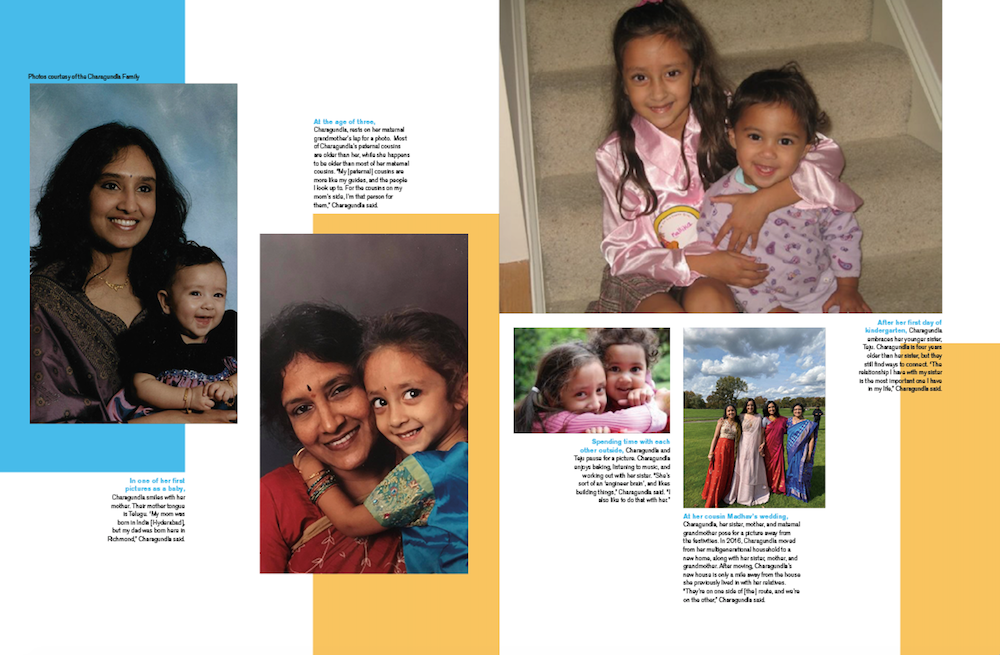

Print Issues
As the Editor-in-Chief of tjTODAY, I lead student journalists and our monthly print editions of tjTODAY, chair press conferences, and write, design, and take photographs for both our print and online publication. The following is our process for creating a print news magazine.
Brainstorm ideas for our 25-page print issues–we have 5 categories (Sports, Entertainment, Sci-tech, Opinion, Features)
Select topics and create a Trello board, where staff members can sign up for an article/spread that they would like to write/design
Host press conference with Jefferson principal Dr. Ann Bonitatibus
Host lead-editorial
Write and design 3-page cover story
Advise staff members on articles and spreads<
/li>When editing any staff members work, I always verbally explain the reasoning behind my recommended edits, and always make sure to include what I like about the spread to establish a positive and encouraging relationship between myself and the staff member. Below is an example of a timeline of edits I recommended to a staff member for her spread for our February print issue.
Conduct meeting with journalism advisors Ms. Erinn Harris and Pete, who review all print issue spreads and recommend changes–we take notes for any staffers who miss the meeting
- Filling in the gaps (cover story: pages 9-11)
- We still count (cover story: pages 4-7)
- A family's transformation (cover story: pages 12-17)
Publish the issue
One of my favorite cover stories we created includes our December print issue cover story "The art of family progression". These photo essays follow Jefferson senior Mallika Charagundla's family story. For this story, I gathered and selected photos, wrote captions, and worked with other tjTODAY members to design the following spreads. Throughout these spreads we often played around with white space.
When Charagundla was very young, her father unexpectedly passed away. This divider spread depicts the first stage of her life.
After Charagundla's father passed away, she moved into her cousins' house along with her mother, sister, and father's dad. During this stage, she grew very close with all of her cousins, aunts, and uncles, as many of them lived in the same location. Her father's dad later passed away her sophomore year of high school.
Recently, Charagundla, her mother, her sister, and her mother's mom has moved into a new house a few minutes away from her cousins' house.
For this story, I also conducted a two hour interview with Charagundla to learn more about each picture and its significance to her. This interview was important to me because I was able to connect with Charagundla and foster an environment where she felt comfortable enough to share such a personal and sensitive story. Sharing my own anecdotes and treating the interview as a conversation especially helped in creating this atmosphere.
Here is an excerpt from a note that Mallika wrote to me while we were covering her story: “Hi stuti! So for each of the photos, i included a little bit about the people. If you want me to include an actual back story about the event of the picture, let me know… If you need any more explanations of names, ages, relations, etc., give me a call or text and I can explain! Thanks so much for this Stuti, it was so fun seeing these pictures, and if you hadn’t asked me to do this, I never would have seen some of these.”
This is a timeline of a spread I designed, the edits for which were suggested by Ms. Harris and Pete.